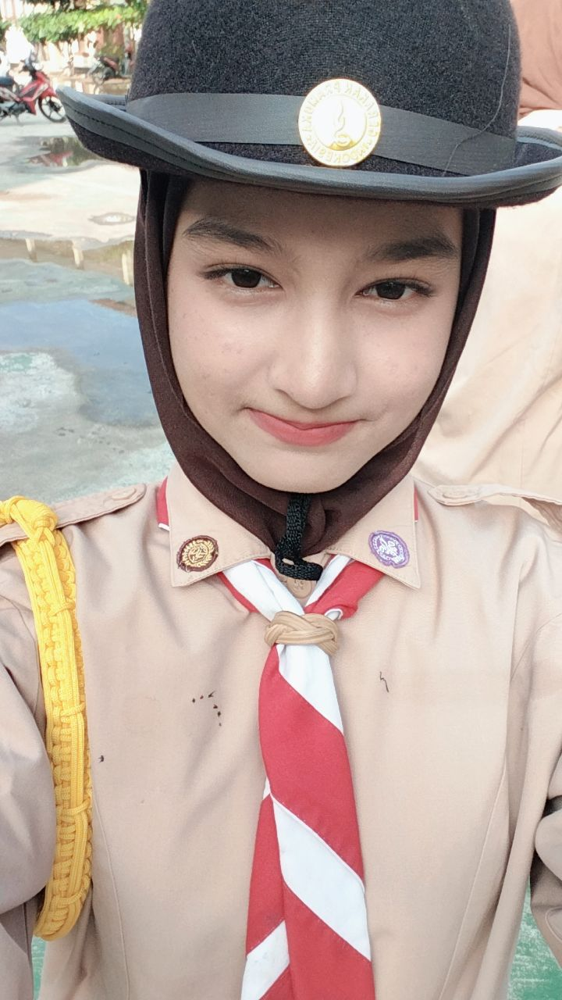

✨ Pesona perempuan terbaik yang pernah aku temuin ✨
"Dia orang terbaik"
"Dia baikk bangett"
"Humble jugaa"
"Tidaa ngebosenin lagi"
"Lucu"
"Imut"

"Punya banyak prestasi"
"Punya planing yang bagus:3"
"Pantang Menyerah"
"Menjadi wanita penuh inspirasi"
"Punya kepribadian yang sangat baik "
"Pintar dalam segala hal"
"Berfokuskan kepada masa depannya"
"Cantik dalam hal apapun"
"Sempurna"
"Aghh sampe gabisa berkata kata lagi"
"Baik bangett intinyaaaa"
"Paling SULIT buat digapai"

"Satu yang tersempurna dari milyaran manusia kecuali ibu"
üíå Surat buat Syifa
Syifa, makasih udah hadir di hidupku. Kamu istimewa banget, semoga kita bisa terus bareng sampai kapanpun. üåπ